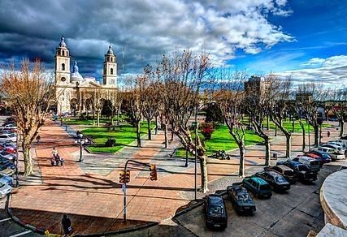
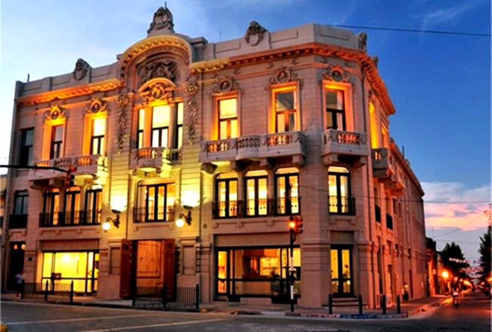

Plaza de los 33 Orientales
Visita San José República Oriental del Uruguay
Catedral de San José de Mayo
Visita San José República Oriental del Uruguay

Teatro Maccio
Visita San José República Oriental del Uruguay